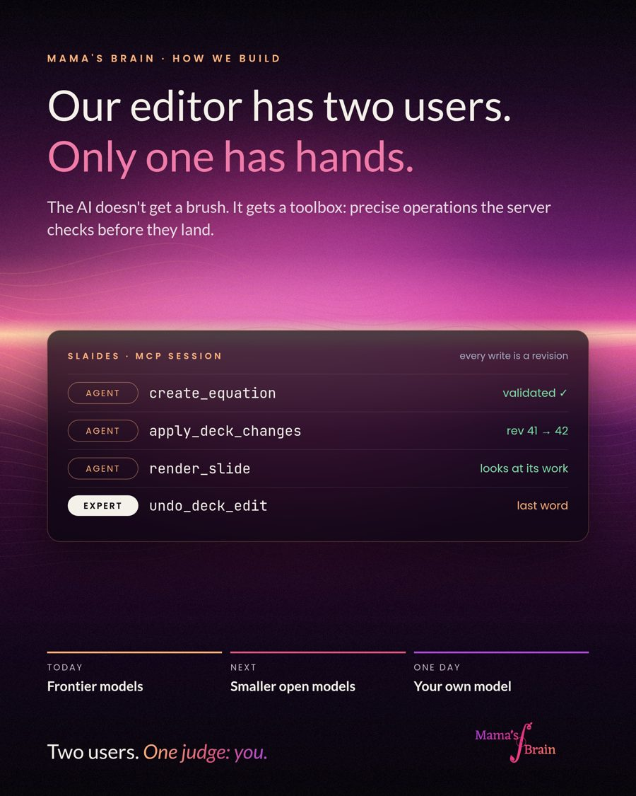

Help experts relearn how to learn, now that they work with AI.
We build the expert's workspace: the AI does the mechanical work, the expert keeps the object, and nothing gets flattened between the data and the decision.
Three promises, one craft.
Within five years, using AI in expert work should no longer mean giving up authorship. Speed and control stop being a trade-off.
Relearning to learn
What the AI does stays open, visible and editable, so working with it makes you better at your craft instead of making you forget it.
Coherent workflows
One thread from source to result: objects, proposals and the memory of decisions carry across steps and tools.
Work that lasts
Work you can come back to months later, review, reuse and defend, at a pace an expert can sustain.
Nothing gets flattened.
An equation stays an equation, a chart keeps its data, a claim keeps its source. No system certifies its own work: the machine proposes, the expert decides.
Technical talks where LaTeX stays LaTeX.
- Equations stay LaTeX: click one, edit the source, see it update.
- Charts keep their data, tables keep their formulas, TikZ figures stay code.
- Your AI assistant (ChatGPT today) builds and edits the deck through checked operations.
- Every change is a revision you can compare, undo or restore. Export to PowerPoint you can still edit.


Software has a new user. We built for both.
People edit with their hands. AI agents edit through MCP, an open protocol: typed operations the server checks before they land, each one a numbered revision. The AI doesn't get a brush; it gets a toolbox, and you keep the last word.
The structure is ours; the model on the other side can change.

One principle, several tools.
slAIdes
The editor for technical talks. LaTeX, charts, tables and media stay native, editable objects, for you and for your AI assistant.
EasyPlotter
Scientific figures you can rerun, inside VS Code. Load CSV, HDF5, NumPy or Excel, build processing pipelines and export publication-ready figures.
AgentPortfolio
Portfolio review for public markets: market data, news analysis and agent coordination turned into an auditable basis a professional can defend. Human review, not automatic trading.
GeniusLamp
Opportunity review for private markets: material, evidence, missing proof and reviewer feedback become a structured decision packet.
Mama's Brain on Substack.
Essays on expertise, AI and the tools in between: what the machine gets right, what it gets wrong, and how we design for the expert who has to defend the result.
Two PhD students at KTH in Stockholm. Bootstrapped.
Pilots, research groups and collaborations: msanchisagudo@gmail.com